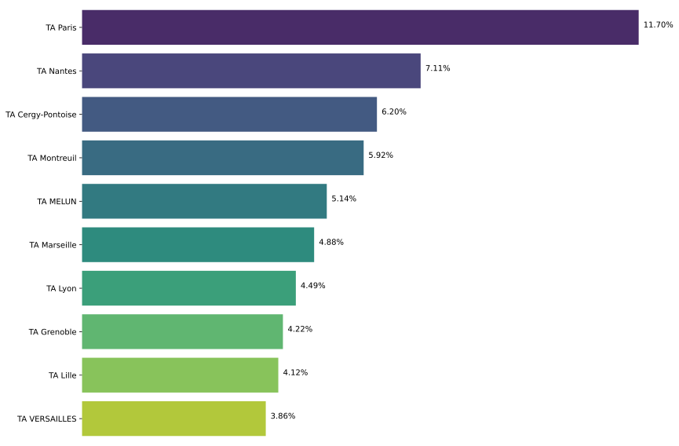
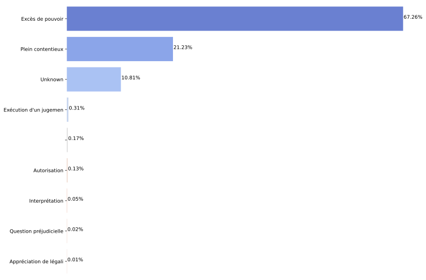
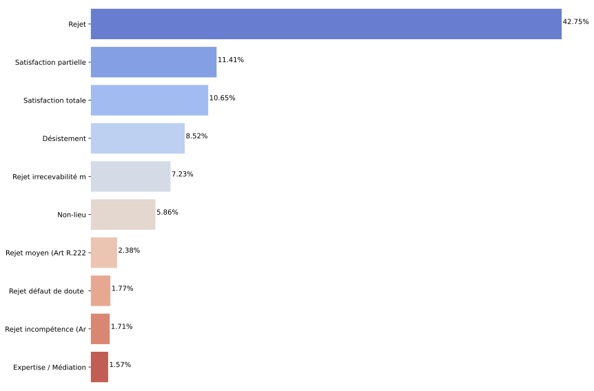

The data used in the document had been extracted from the French Administrative Justice's open data platform. The data presented covers all recorded decisions and ordonances from the french "Tribunaux Adminstatifs" (TA) form 2022 to 2026, encompassing a total of 768,454 cases across 41 unique administrative courts.
Paris is overly represented compared to other jurisdictions, handling over 10% of all cases.Moreover, 5 out of the Top 10 jurisdictions by volume (Paris, Cergy-Pontoise, Montreuil, Melun and Versailles) are in Ile-de-France, the capital's region.
This reflects the status of Paris as the capital, but also the centralisation of administrative functions in France. Ile-de-France is home to 18% of the French population.

The distribution of appeals is also heavily skewed towards one category: "Excès de pouvoir" (Excess of Power), representing 67% of all cases.

Once again, a single category is overly represented in the data: "Rejet" (Rejected). This ruling is 4 times more present than the second most common ruling: "Satisfaction partielle" (Partial Satisfaction).
4 other types of rejections are present in the Top 10 of solutions. Together, these 5 types of rejections represent almost 56% of the data.

The total number of cases have increased by roughly 10% over three years with a notable downwards spike every August which may be due to administrative closures during summer months.
The distribution of cases across the top 5 jurisdictions has remained relatively stable over time. With Paris increasing slightly in comparative volume.
The proportions of recours types have remained relatively stable over time, with "Excès de pouvoir" (Excess of Power) consistently representing the largest category.
The proportions of solution types have remained relatively stable over time, with "Rejet" (Rejected) consistently representing the largest category.
Having outlaid the global trends and their temporal evolution, we now examine how these trends are represented at the jurisdiction level.
This histogram represents the proportion of the most represented recours "Excès de pouvoir" accross all jurisdictions. Interestingly, the mainland jursidictions are closely grouped around the average.
On the opposite, the overseas territories are sytematically outliers (Martinique is the most similar to the mainland jurisdictions). The caraibean territories show a higher proportion of "Excès de pouvoir" recours, while the other overseas territories show a significantly lower proportion.
Finally, once again Paris shows a distinct pattern compared to the mainland jurisdictions, with a comaratively lower rate of "Excès de pouvoir" recours.
The distribution of "rejet" vs other solutions is tighter than that of "Excès de pouvoir". The overseas/mainland divide is also less pronounced.
However, the most striking outlier is Mayotte, also one on the strongest outliers in the recours distribution. Indeed, Mayotte shows a "rejet" ratio of almost 60%.